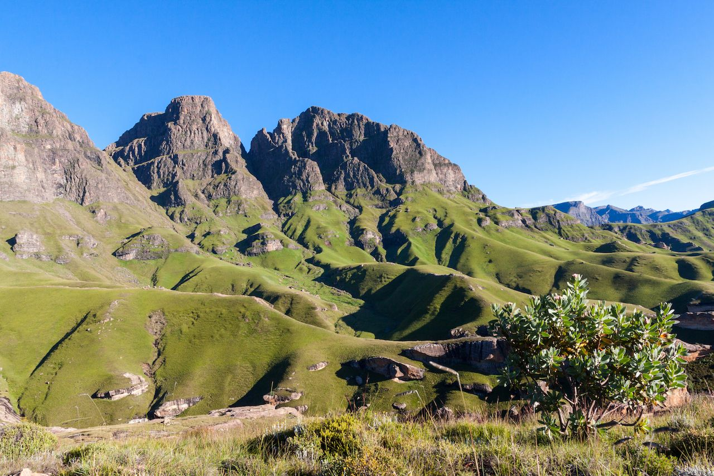
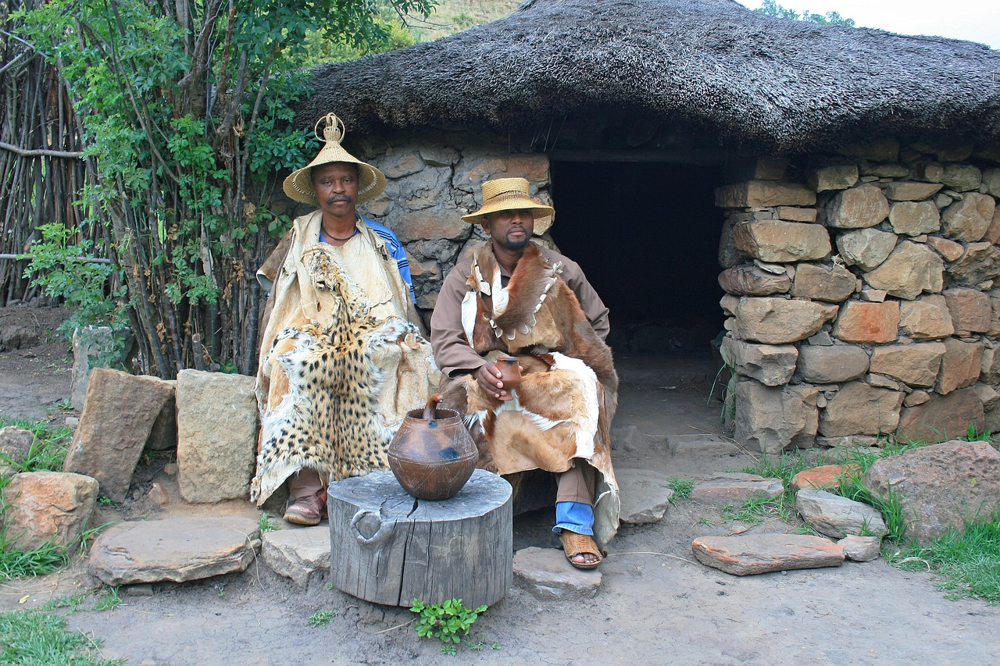
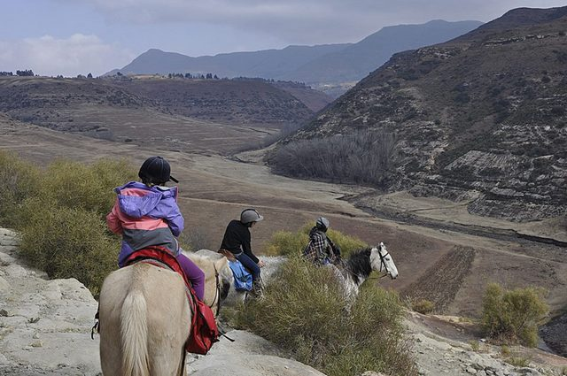
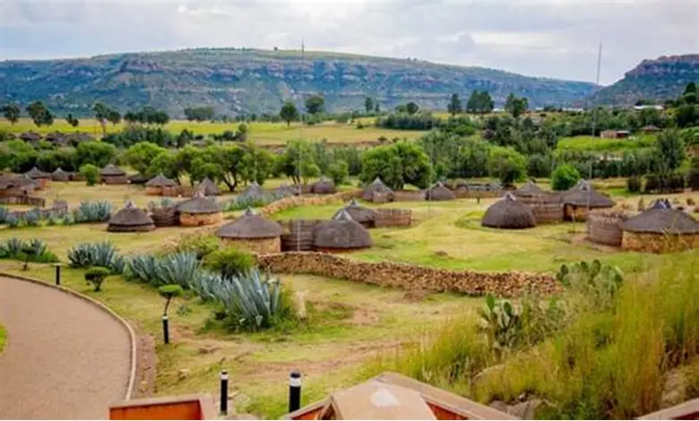

The Lesotho Tourism Expo is an annual tourism event designed to promote the Kingdom of Lesotho as a travel destination. The expo brings together tour operators, hospitality businesses, cultural groups and tourism stakeholders who showcase the unique tourism products available in the country.
Visitors attending the expo are able to discover the beauty of Lesotho's mountains, learn about cultural traditions, explore adventure tourism opportunities and connect with tourism businesses offering travel experiences throughout the country.
The event also provides a platform for tourism businesses to network, share knowledge and develop partnerships that strengthen the tourism industry in Lesotho.
The mission of the Lesotho Tourism Expo is to promote sustainable tourism development by creating awareness of the country's natural beauty, cultural heritage and tourism attractions. Through exhibitions, presentations and tourism showcases, the expo encourages both local and international visitors to explore the Kingdom in the Sky.
Tourism events such as this contribute to economic development by creating opportunities for businesses, increasing tourist arrivals and supporting local communities involved in tourism activities.

Lesotho has a unique cultural identity including traditional clothing, music, dance and architecture.

Tourists can enjoy pony trekking, hiking and outdoor adventures in the mountains.

The tourism expo connects visitors with tourism companies and travel opportunities across Lesotho.
Be part of one of the most exciting tourism events in Lesotho and discover the beauty of the Kingdom in the Sky.
Get Your Ticket